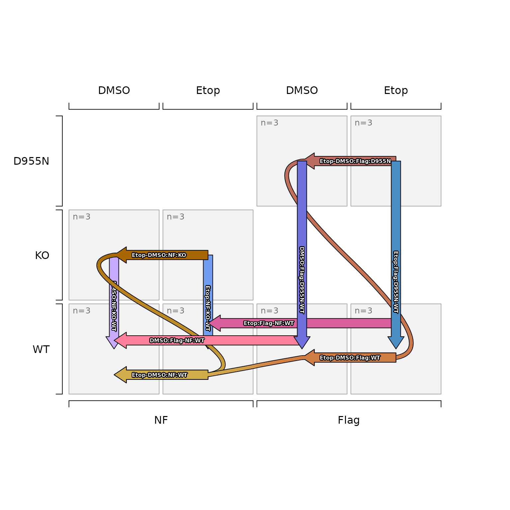

Convert SEDesign to data.frame of design factors
Source:R/jam_sedesign_to_factors.R
sedesign_to_factors.RdConvert SEDesign to data.frame of design factors
Usage
sedesign_to_factors(
sedesign,
se = NULL,
factor_names = NULL,
factor_sep = "_",
default_order = c("appearance", "mixedSort"),
verbose = FALSE,
...
)Arguments
- sedesign
SEDesignobject- se
SummarizedExperimentobject which containsSummarizedExperiment::colData()with columns of design annotations. When present, values in the factordata.framewill be matched to values in these columns in order to re-use factor levels where possible. Whenfactor_namesis not defined, this step will also re-use the associated colnames fromcolData(se)when the values are matched.- factor_names
charactervector of colnames to use for the resulting design factor colnames.- factor_sep
characterstring with expected delimiter between factors, default "_", for example "WT_Treated".- default_order
characterstring indicating how to order factor levels when a colname in the factordata.frameis not afactorin the matchingcolData()column."appearance": factor levels are defined in the order they appear in the sample data"mixedSort": factor levels are defined by sorting data usingjamba::mixedSort()which performs proper alphanumeric sorting, such that "Treat2" appears before "Treat10" for example.
- verbose
logicalindicating whether to print verbose output.- ...
additional arguments are ignored.
Value
data.frame with one column for each experiment design factor,
where each column is converted to factor for non-numeric columns,
and where colnames are defined as follows:
use
factor_colnameswhen supplieduse the corresponding column in
colData(se)whenseis supplieduse
factor#format for all other columns
Details
This function is a utility function intended to convert SEDesign
objects, which contain a design matrix, into a data.frame
representing the experimental design factors used to produce
the design matrix.
See also
Other jam experiment design:
SEDesign(),
[,SEDesign-method,
check_sedesign(),
contrast2comp(),
contrast_colors_by_group(),
contrast_names_to_sedesign(),
contrastnames(),
contrasts(),
contrasts<-(),
contrasts_to_factors(),
contrasts_to_venn_setlists(),
design,SEDesign-method,
draw_oneway_contrast(),
draw_twoway_contrast(),
factors(),
filter_contrast_names(),
groups(),
groups_to_sedesign(),
plot.SEDesign(),
plot_sedesign(),
print,SEDesign-method,
samples(),
sort_contrasts(),
validate_sedesign()
Examples
isamples_1 <- paste0(
rep(c("DMSO", "Etop", "DMSO", "Etop"), each=6),
"_",
rep(c("NF", "Flag"), each=12),
"_",
rep(c("WT", "KO", "WT", "KO", "WT", "D955N", "WT", "D955N"), each=3),
"_",
LETTERS[1:3])
# simple data.frame with group information
idf <- data.frame(jamba::rbindList(strsplit(isamples_1, "_")))[,1:3]
rownames(idf) <- isamples_1;
# convert to sedesign
sedesign <- groups_to_sedesign(idf)
plot_sedesign(sedesign, axis1=2, axis2=3, axis3=1, label_cex=0.5)

# prepare colData data.frame
cdf <- data.frame(check.names=FALSE, stringsAsFactors=FALSE,
jamba::rbindList(strsplit(isamples_1, "_")))
colnames(cdf) <- c("Treatment", "Flag", "Genotype", "Rep")
rownames(cdf) <- sedesign@samples;
cdf
#> Treatment Flag Genotype Rep
#> DMSO_NF_WT_A DMSO NF WT A
#> DMSO_NF_WT_B DMSO NF WT B
#> DMSO_NF_WT_C DMSO NF WT C
#> DMSO_NF_KO_A DMSO NF KO A
#> DMSO_NF_KO_B DMSO NF KO B
#> DMSO_NF_KO_C DMSO NF KO C
#> Etop_NF_WT_A Etop NF WT A
#> Etop_NF_WT_B Etop NF WT B
#> Etop_NF_WT_C Etop NF WT C
#> Etop_NF_KO_A Etop NF KO A
#> Etop_NF_KO_B Etop NF KO B
#> Etop_NF_KO_C Etop NF KO C
#> DMSO_Flag_WT_A DMSO Flag WT A
#> DMSO_Flag_WT_B DMSO Flag WT B
#> DMSO_Flag_WT_C DMSO Flag WT C
#> DMSO_Flag_D955N_A DMSO Flag D955N A
#> DMSO_Flag_D955N_B DMSO Flag D955N B
#> DMSO_Flag_D955N_C DMSO Flag D955N C
#> Etop_Flag_WT_A Etop Flag WT A
#> Etop_Flag_WT_B Etop Flag WT B
#> Etop_Flag_WT_C Etop Flag WT C
#> Etop_Flag_D955N_A Etop Flag D955N A
#> Etop_Flag_D955N_B Etop Flag D955N B
#> Etop_Flag_D955N_C Etop Flag D955N C
# prepare assay matrix
imatrix <- matrix(data=seq_len(nrow(cdf) * 10), ncol=nrow(cdf));
colnames(imatrix) <- rownames(cdf);
rownames(imatrix) <- paste0("row", 1:10);
# prepare se
se <- SummarizedExperiment::SummarizedExperiment(
assays=list(raw=imatrix),
colData=cdf)
sedesign_to_factors(sedesign, se=se)
#> Treatment Flag Genotype
#> DMSO_NF_WT_A DMSO NF WT
#> DMSO_NF_WT_B DMSO NF WT
#> DMSO_NF_WT_C DMSO NF WT
#> DMSO_NF_KO_A DMSO NF KO
#> DMSO_NF_KO_B DMSO NF KO
#> DMSO_NF_KO_C DMSO NF KO
#> DMSO_Flag_WT_A DMSO Flag WT
#> DMSO_Flag_WT_B DMSO Flag WT
#> DMSO_Flag_WT_C DMSO Flag WT
#> DMSO_Flag_D955N_A DMSO Flag D955N
#> DMSO_Flag_D955N_B DMSO Flag D955N
#> DMSO_Flag_D955N_C DMSO Flag D955N
#> Etop_NF_WT_A Etop NF WT
#> Etop_NF_WT_B Etop NF WT
#> Etop_NF_WT_C Etop NF WT
#> Etop_NF_KO_A Etop NF KO
#> Etop_NF_KO_B Etop NF KO
#> Etop_NF_KO_C Etop NF KO
#> Etop_Flag_WT_A Etop Flag WT
#> Etop_Flag_WT_B Etop Flag WT
#> Etop_Flag_WT_C Etop Flag WT
#> Etop_Flag_D955N_A Etop Flag D955N
#> Etop_Flag_D955N_B Etop Flag D955N
#> Etop_Flag_D955N_C Etop Flag D955N
# confirm first column contains proper factor order
sedesign_to_factors(sedesign, se=se)[,1]
#> [1] DMSO DMSO DMSO DMSO DMSO DMSO DMSO DMSO DMSO DMSO DMSO DMSO Etop Etop Etop
#> [16] Etop Etop Etop Etop Etop Etop Etop Etop Etop
#> Levels: DMSO Etop
# demonstrate reverse order of Treatment column levels
SummarizedExperiment::colData(se)$Treatment <- factor(
SummarizedExperiment::colData(se)$Treatment,
levels=c("Etop", "DMSO"))
sedesign_to_factors(sedesign, se=se)[,1]
#> [1] DMSO DMSO DMSO DMSO DMSO DMSO DMSO DMSO DMSO DMSO DMSO DMSO Etop Etop Etop
#> [16] Etop Etop Etop Etop Etop Etop Etop Etop Etop
#> Levels: Etop DMSO
# define Treatment column levels again
SummarizedExperiment::colData(se)$Treatment <- factor(
SummarizedExperiment::colData(se)$Treatment,
levels=c("DMSO", "Etop"))
sedesign_to_factors(sedesign, se=se)[,1]
#> [1] DMSO DMSO DMSO DMSO DMSO DMSO DMSO DMSO DMSO DMSO DMSO DMSO Etop Etop Etop
#> [16] Etop Etop Etop Etop Etop Etop Etop Etop Etop
#> Levels: DMSO Etop
# provide specific colnames to use from se object
sedesign_to_factors(sedesign,
se=se,
factor_names=c("Treatment", "Flag", "Genotyoe"))
#> Treatment Flag Genotyoe
#> DMSO_NF_WT_A DMSO NF WT
#> DMSO_NF_WT_B DMSO NF WT
#> DMSO_NF_WT_C DMSO NF WT
#> DMSO_NF_KO_A DMSO NF KO
#> DMSO_NF_KO_B DMSO NF KO
#> DMSO_NF_KO_C DMSO NF KO
#> Treatment Flag Genotyoe
#> DMSO_NF_WT_A DMSO NF WT
#> DMSO_NF_WT_B DMSO NF WT
#> DMSO_NF_WT_C DMSO NF WT
#> DMSO_NF_KO_A DMSO NF KO
#> DMSO_NF_KO_B DMSO NF KO
#> DMSO_NF_KO_C DMSO NF KO
#> DMSO_Flag_WT_A DMSO Flag WT
#> DMSO_Flag_WT_B DMSO Flag WT
#> DMSO_Flag_WT_C DMSO Flag WT
#> DMSO_Flag_D955N_A DMSO Flag D955N
#> DMSO_Flag_D955N_B DMSO Flag D955N
#> DMSO_Flag_D955N_C DMSO Flag D955N
#> Etop_NF_WT_A Etop NF WT
#> Etop_NF_WT_B Etop NF WT
#> Etop_NF_WT_C Etop NF WT
#> Etop_NF_KO_A Etop NF KO
#> Etop_NF_KO_B Etop NF KO
#> Etop_NF_KO_C Etop NF KO
#> Etop_Flag_WT_A Etop Flag WT
#> Etop_Flag_WT_B Etop Flag WT
#> Etop_Flag_WT_C Etop Flag WT
#> Etop_Flag_D955N_A Etop Flag D955N
#> Etop_Flag_D955N_B Etop Flag D955N
#> Etop_Flag_D955N_C Etop Flag D955N
sedesign_to_factors(sedesign,
se=se,
factor_names=c("Treatment", "Flag", "Genotyoe"))[,1]
#> Treatment Flag Genotyoe
#> DMSO_NF_WT_A DMSO NF WT
#> DMSO_NF_WT_B DMSO NF WT
#> DMSO_NF_WT_C DMSO NF WT
#> DMSO_NF_KO_A DMSO NF KO
#> DMSO_NF_KO_B DMSO NF KO
#> DMSO_NF_KO_C DMSO NF KO
#> [1] DMSO DMSO DMSO DMSO DMSO DMSO DMSO DMSO DMSO DMSO DMSO DMSO Etop Etop Etop
#> [16] Etop Etop Etop Etop Etop Etop Etop Etop Etop
#> Levels: DMSO Etop
# substring of colnames(colData(se)) is acceptable
sedesign_to_factors(sedesign,
factor_names=c("Treat", "Flag", "Genotyoe"),
se=se)[,1]
#> Treat Flag Genotyoe
#> DMSO_NF_WT_A DMSO NF WT
#> DMSO_NF_WT_B DMSO NF WT
#> DMSO_NF_WT_C DMSO NF WT
#> DMSO_NF_KO_A DMSO NF KO
#> DMSO_NF_KO_B DMSO NF KO
#> DMSO_NF_KO_C DMSO NF KO
#> [1] DMSO DMSO DMSO DMSO DMSO DMSO DMSO DMSO DMSO DMSO DMSO DMSO Etop Etop Etop
#> [16] Etop Etop Etop Etop Etop Etop Etop Etop Etop
#> Levels: DMSO Etop